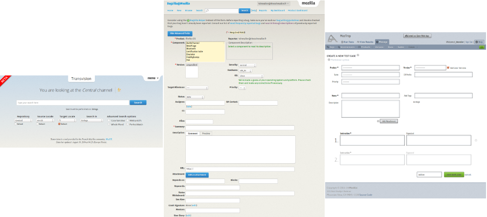
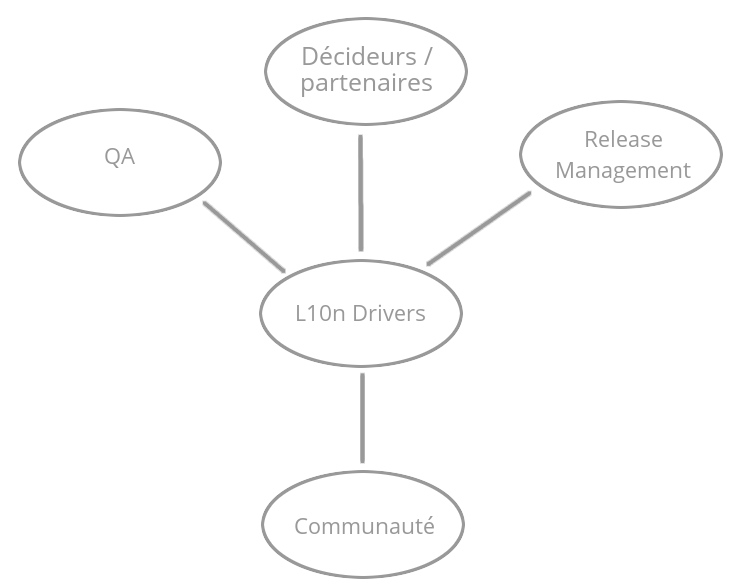

Localization Driver Intern
Théo Chevalier – L3 MIAGE – 27 août 2014, Toulouse
I. Introduction
Présentation des projets
Présentation des outils
Pont de communication
II. Gestion de projets
Gestion des imprévus
- Flexibilité
- Prioritisation
- Réactivité
Assurance qualité d’un OS mobile
- Respect du calendrier
- Gestion des risques
- Plan de test
1. Respect du calendrier
- Spécificités de Mozilla
- Surveillance des correctifs à risque
- Surveillance des tableaux de bord
- Collaboration avec Release Management
2. Évaluation des risques
- Évaluer le rapport gains/risques
- Envisager des solutions de repli
- Communiquer les décisions
3. Plan de test
- Cas d’utilisation
- Supervision sous-traitance
- Validation des localisations
3.1. Cas d’utilisation
- Détecter les parties sensibles
- Déterminer des valeurs de test représentatives
- Estimer le temps de test
3.2 Gestion sous-traitance
- Fournir les données
- Assistance technique
- Procédure de test
3.3 Validation des localisations
- Critères de validation
- Estimer la sévérité des problèmes
- Estimer la résolution des bogues bloquants
Amélioration d’un outil QA
Application à Transvision
- Définition des besoins
- Estimation des délais
- Définition du cahier des charges
- Développement, test et documentation
- Implémentation des retours
- Mise en production
1. Définition des besoins
- Besoins sous-traitants
- Besoins L10n Drivers
- Besoins communauté
2. Établissement du cahier des charges
- Plusieurs itérations
- Validé par le chef de projet
- Découpé en plusieurs projets si besoin
3. Estimation des délais
- En fonction des dépendances
- En fonction des risques
- En fonction des effectifs
4. Développement, test et documentation
- Tests systématiques
- Pair reviewing
- Documentation
5. Implémentation des retours
- Tests manuels du prototype
- Cycles de correction
- Validation intégration
6. Mise en production
- Tests sur serveur de production
- Correctifs éventuels
- Validation production
Prise en compte de contraintes fortes
Application à mozilla.org
Conclusion
- Résultats
- Compétences acquises
Résultats
- Amélioration des processus d’assurance qualité
- Augmentation de l’implication des utilisateurs techniques
- Lancement de Firefox OS en France
- Amélioration qualitative de Firefox OS
Compétences acquises
- Travail en anglais avec des équipes réparties
- Prise en compte de contraintes lourdes
- Évaluation des risques
- Gestion des imprévus
- Conduite de réunions
- Développement de code maintenable (tests unitaires, documentation…)
- Communication externe